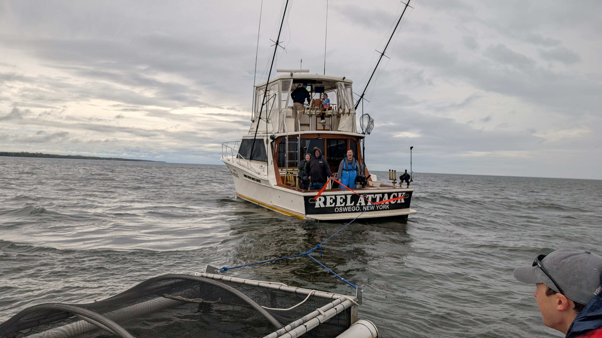
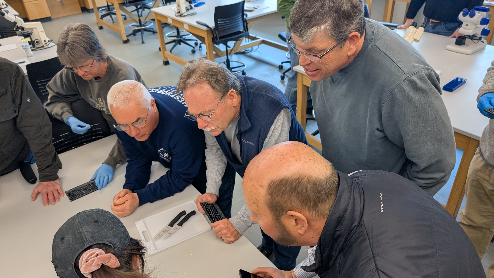
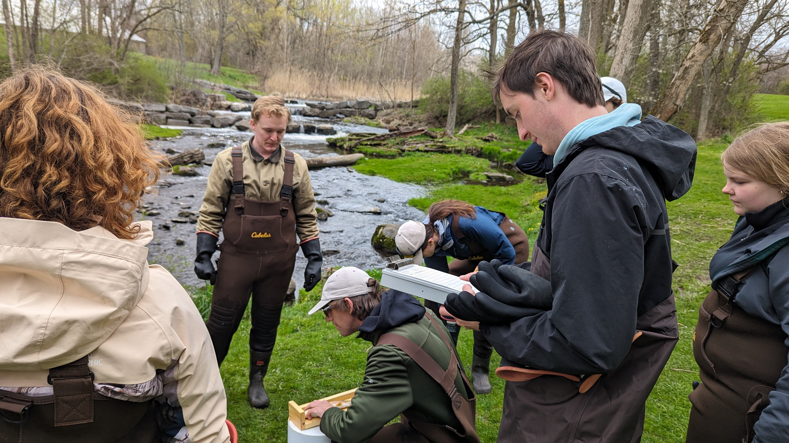

SOAC News
Undergraduate Research: Eli Horst
Exploring the genetic makeup of Lake Ontario Chinook Salmon.
Graduate Research: Chloe Wang
Restoration of Brook Trout in the Onondaga creek watershed.
Graduate Research: Maggie Carroll
Examining muskellunge and walleye population structure in the St. Lawrence River and Eastern Lake Ontario.
Golden Walleye Research
A Grand Alliance: Restoring the Great Lakes' Native Fish Heritage.